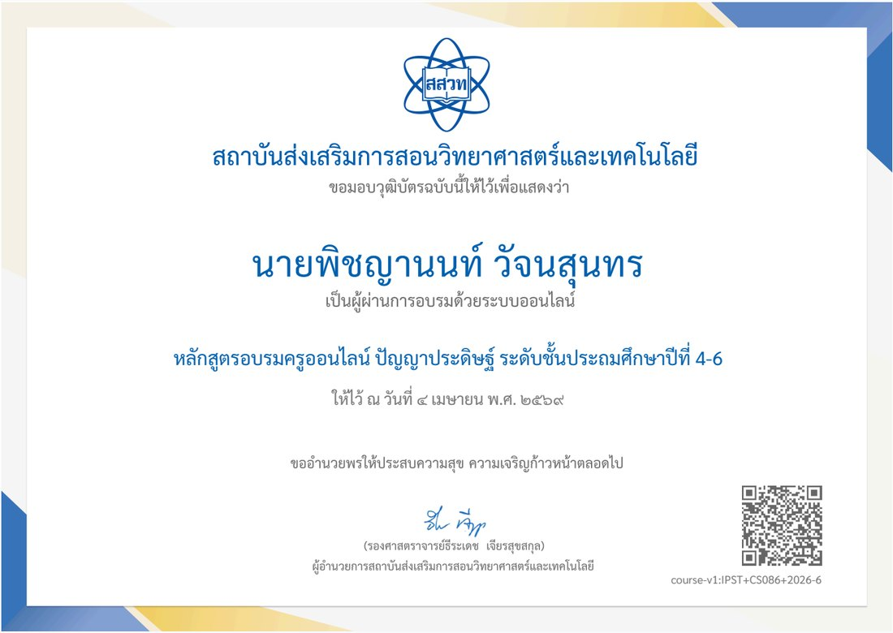
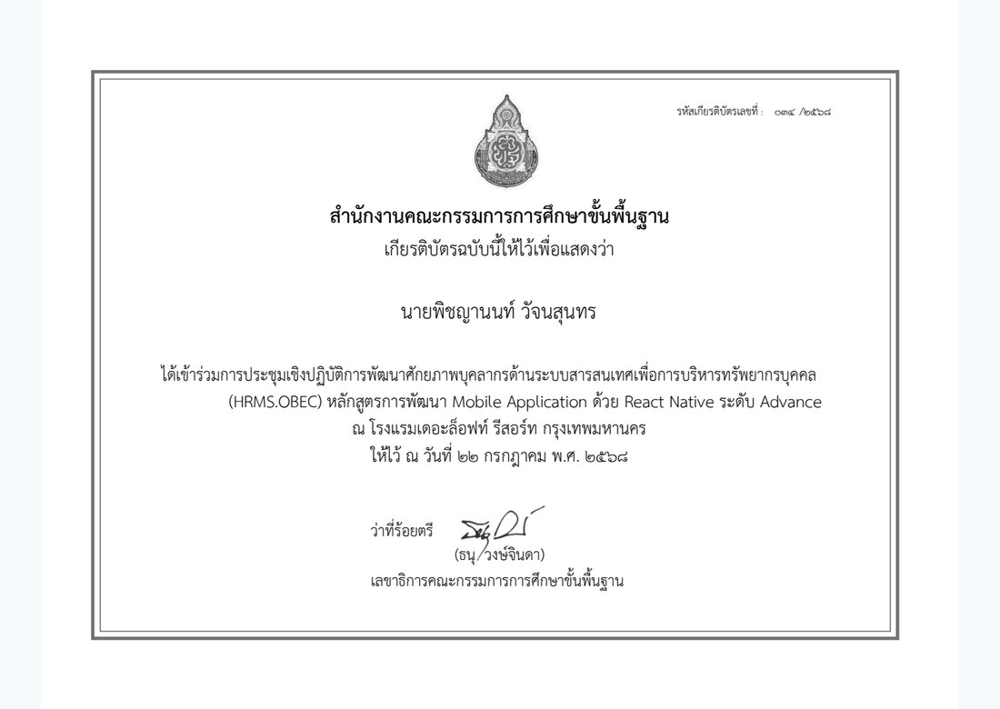
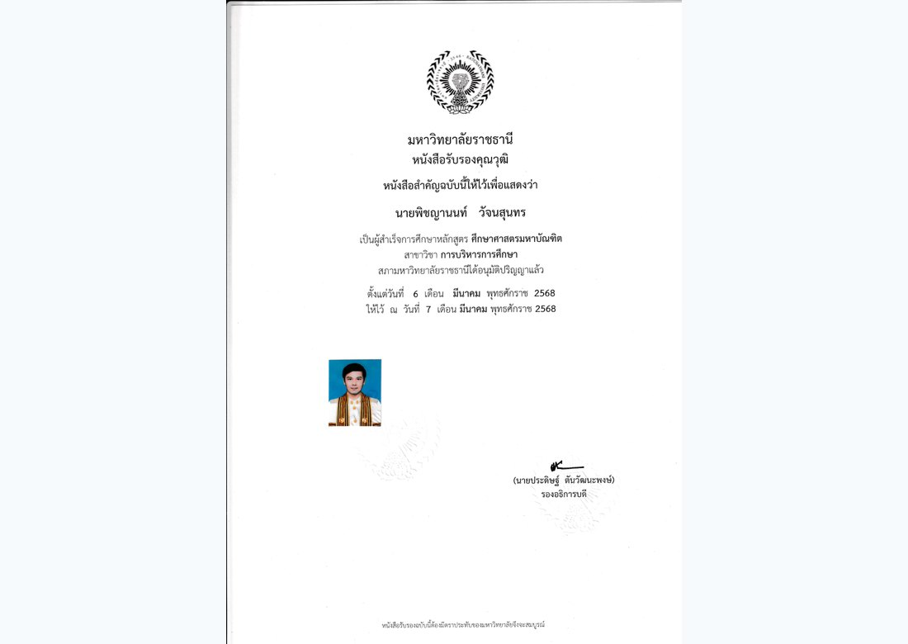

พัฒนาวิชาชีพ · 2569
IPST CS086 Certificate
หลักฐานการอบรมด้านวิทยาการคำนวณ/เทคโนโลยี จาก สสวท. ที่ระบุชื่อผู้รับเกียรติบัตรโดยตรง
Certificate Archive
รวบรวมหลักฐานการพัฒนาวิชาชีพและคุณวุฒิที่ตรวจพบชื่อ นายพิชญานนท์ วัจนสุนทร จากภาพหรือข้อความในไฟล์หลักฐานโดยตรง

หลักฐานการอบรมด้านวิทยาการคำนวณ/เทคโนโลยี จาก สสวท. ที่ระบุชื่อผู้รับเกียรติบัตรโดยตรง

การพัฒนาศักยภาพด้านการสร้างแอปพลิเคชันและระบบดิจิทัล พร้อมชื่อผู้ผ่านการอบรม

หลักฐานคุณวุฒิทางการศึกษา สาขาบริหารการศึกษา ที่ระบุชื่อเจ้าของเอกสาร
หมายเหตุ: หน้านี้คัดเฉพาะภาพที่ตรวจพบชื่อ "นายพิชญานนท์ วัจนสุนทร" และไม่แสดงไฟล์ที่เป็นชื่อบุคคลอื่นหรือข้อมูลนักเรียนรายบุคคลโดยตรง